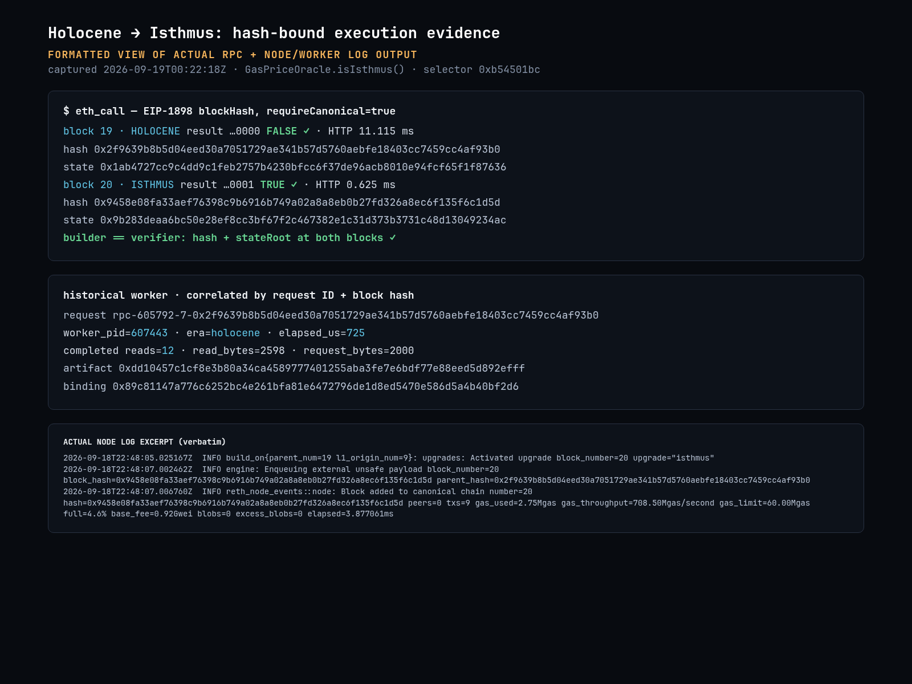
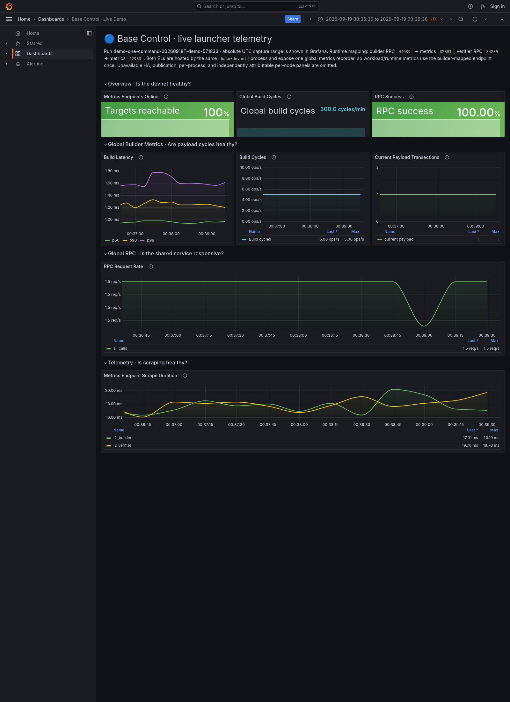

Retire fork code. Keep verifiable history.
Loading evidenceEach upgrade adds another set of rules to maintain. Base Era moves historical execution into pinned workers, creating a path to remove superseded logic from the active client—not stop verifying old blocks.
A real deletion diff: ~6k Rust LoC
Full diff + per-file counts ↗Fresh Base clone, Beryl-and-later horizon: 6,378 Rust lines deleted, 471 added. Physical lines include comments and blanks; bytecode and build metadata are excluded. This is a separate source experiment, not a change to the live demo.
Retires old channel/batch pipelines, upgrade transaction builders, fee and receipt rules, and historical execution/proof assembly. Current rules, old-data decoders, schedules and future forks stay. 648 tests pass; 8 documentation examples remain ignored.
Keep the latest client small as the chain accumulates forks. Pin an era → route and verify its history → migrate remaining consumers → delete superseded host bodies. Repeat at each fork. Realizing the full estimate requires historical derivation and proof dispatch, beyond this demo’s execution worker. That integration adds code; the deletion candidate is not safe for historical replay.
Devnet: execution logs + Base Control
Capture notes + reproduce ↗{kind=link}

{kind=link}

A historical call, through the worker
Captured request + logs ↗One recorded warm sample, not a live dashboard. Exchange includes IPC, state reads and execution; remaining round-trip time is unattributed. Capture method ↗
Loading acceptance results…
Performance
History host + worker vs original reference| Metric | History host | Reference |
|---|---|---|
| Loading measurements… | ||
Warm medians, 20 samples. Hardware, build profiles and CPU/memory measurements are in the linked report.
223× faster historical calls; 254× faster estimation. Versus the original debug-build demo, including optimized compilation. Persistent isolated workers cache configuration, never execution state; warm request frames shrink from 9.37 MB to 2 KB. Calls remain 51× slower than the optimized in-process reference. Measurements + limits ↗
Execution boundary
Isthmus activation: block 20| Blocks | Rules | Executor |
|---|---|---|
| 1–19 | Holocene | Pinned worker |
| 20 | Isthmus cutover | Host; old-era parent |
| 21+ | Isthmus | Host |
Real fork differences: upgrade deposits, GasPriceOracle flag, and requests/withdrawals commitments.
- Protocol v2: reusable sessions; every request binds chain/config, parent, candidate, operation and artifact digest.
- State: immutable parent reads in; account/storage/code deltas and era-correct receipts out. Only the host writes the DB.
- Isolation: SHA-256 approval, sealed executable, Landlock + seccomp. Failures never fall back to latest rules.
- Independent builds: separate lockfiles; worker Alloy 2.4.2 vs host 2.4.1. Reth delta: 13 files, +300/−42 lines.
Coverage: sequencer/verifier parity, restart, cross-cutover reorgs, malformed Engine/import blocks, historical calls/estimates/traces and worker failure recovery. Additional tests: 13 host, 18 worker, 9 artifact-integrity.
Reproduce
just demoFrom a clone of this repository: builds both implementations, runs the devnet and acceptance suite, then exports evidence. Leaves the network running and prints endpoints and a stop command. Prerequisites + build guide ↗. Linux source-build demo; no binary release yet.
Ethereum context
- EIP-4444
- History retention. Its full-sync design already proposes stitching historical execution engines together; Base Era explores that approach.
- State expiry
- Inactive state can expire and be resurrected. Distinct from history pruning or witness-based statelessness; not implemented here.
- Era / Era1
- Archive data formats, not executable fork rules. This demo does not read or write them.